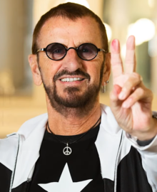

Ringo Starr

Sir Richard Starkey MBE (născut la 7 iulie 1940), cunoscut sub numele de Ringo Starr, este un muzician, compozitor și actor englez care a devenit celebru pe plan internațional ca toboșar al trupei Beatles. Starr a cântat ocazional la voce principală cu grupul, de obicei pentru câte un cântec de pe fiecare album, inclusiv "Yellow Submarine" și "With a Little Help from My Friends". De asemenea, a scris și a cântat piesele Beatles "Don't Pass Me By" și "Octopus's Garden", fiind creditat ca și coautor pentru alte patru piese.Starr a fost afectat de boli care i-au pus viața în pericol în copilărie, cu perioade de spitalizare prelungită. A ocupat pentru scurt timp un post la British Rail, înainte de a obține un post de ucenic ca mașinist la un producător de echipamente școlare din Liverpool. La scurt timp după aceea, Starr a devenit interesat de nebunia skiffle din Marea Britanie și a dezvoltat o admirație ferventă pentru acest gen. În 1957, a cofondat prima sa trupă, Eddie Clayton Skiffle Group, care a obținut mai multe angajamente locale prestigioase înainte ca această modă să cedeze în fața rock and roll-ului american la începutul anului 1958. Atunci când Beatles s-a format în 1960, Starr era membru al unui alt grup din Liverpool, Rory Storm and the Hurricanes. După ce a obținut un succes moderat în Marea Britanie și la Hamburg, a părăsit Hurricanes când i s-a cerut să se alăture trupei Beatles în august 1962, înlocuindu-l pe Pete Best.
În afară de filmele Beatles, Starr a jucat în numeroase alte filme. După destrămarea trupei, în 1970, a lansat mai multe single-uri de succes, printre care "It Don't Come Easy", care a ajuns în topul 10 în SUA, și numerele unu "Photograph" și "You're Sixteen". Cel mai de succes single al său în Marea Britanie a fost "Back Off Boogaloo", care a ajuns pe locul doi. A obținut succes comercial și de critică cu albumul său Ringo din 1973, care a ajuns în top zece atât în Marea Britanie, cât și în SUA. Starr a apărut în numeroase documentare, a fost gazda unor emisiuni de televiziune, a narat primele două serii ale programului de televiziune pentru copii Thomas & Friends și l-a interpretat pe "Mr. Conductor" în primul sezon al serialului de televiziune pentru copii PBS Shining Time Station. Din 1989, a efectuat turnee cu treisprezece variante ale formației Ringo Starr & His All-Starr Band.
Stilul de interpretare al lui Starr, care punea accentul pe simțire în detrimentul virtuozității tehnice, a influențat mulți toboșari să își reconsidere interpretarea din perspectiva compoziției. El a influențat, de asemenea, diverse tehnici moderne de percuție, cum ar fi mânerul potrivit, acordarea tobelor mai joase și utilizarea dispozitivelor de amortizare pe inelele tonale. În opinia sa, cea mai bună interpretare înregistrată a fost cea de pe piesa "Rain" a trupei Beatles. În 1999, a fost inclus în Modern Drummer Hall of Fame. În 2011, cititorii revistei Rolling Stone l-au numit al cincilea cel mai mare baterist al tuturor timpurilor. A fost inclus de două ori în Rock and Roll Hall of Fame, în calitate de Beatle în 1988 și ca artist solo în 2015, și a fost numit Cavaler Bachelor în cadrul ceremoniei de Anul Nou 2018 pentru servicii aduse muzicii.